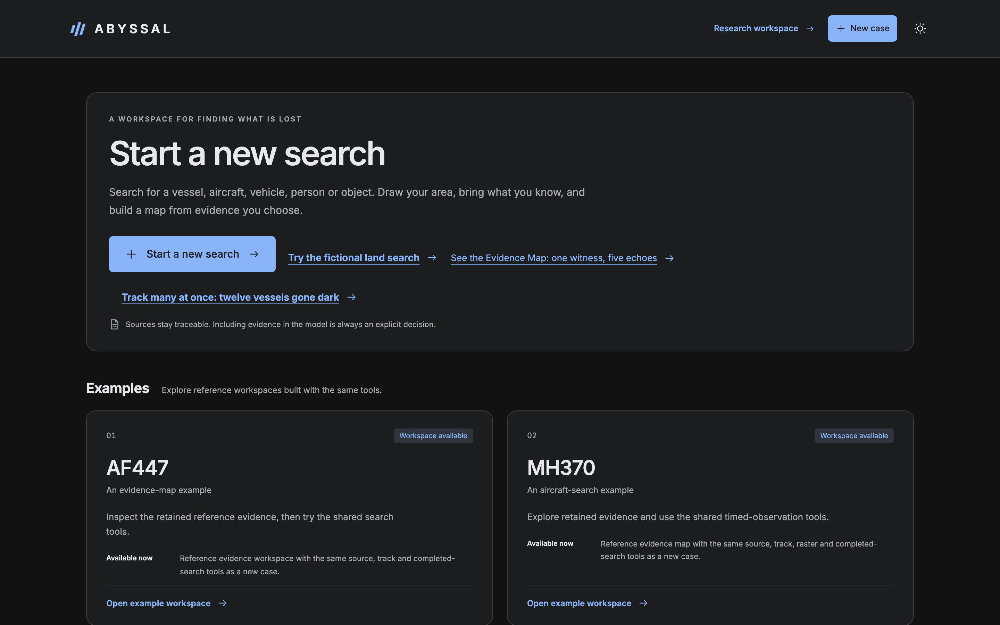

ABYSSAL: Honest Belief Under Imperfect Search
A six-part series on probability maps, correlated evidence, search economics, operational field tools, and the discipline of refusing to overclaim.
When something goes missing—a hiker in alpine terrain, an aircraft over an ocean abyss, a seventeenth-century wreck, or a merchant vessel that switches off its transponder in the middle of the Mediterranean—the hardest part of the search is rarely the hardware. It is epistemology.
Searchers routinely confuse "we covered 80% of the map" with "we have an 80% chance of having found it". They count five retellings of the same witness statement as five independent confirmations. They repeat a failing sensor over the same patch of canopy or acoustic shadow and mistake exhaustion for proof of absence. Worst of all, they draw a neat rectangle on a chart and forget that every empty sweep inside the rectangle makes it likelier that the rectangle itself was wrong.
ABYSSAL is a local-first probabilistic workbench built to replace those habits with explicit arithmetic, unbroken provenance, and human-admitted belief. Over the past month it has evolved from a minimal grid-Bayes prototype into a full spatial reasoning workstation: map-first graphite design, perceptual Ember heatmaps, an Evidence Map that decomposes influence in bits, multi-asset Plan Studio economics, a dark-fleet Watchlist, an Ops Console with live air/sea traffic, 3D terrain, satellite time-machines, and a strict chronological backtest of Air France 447.

SCENARIO simulations and retained historical records. Click any screenshot in this series to inspect it full-size.Read the series
You can read the six pieces in order as a single arc, or jump straight to the perspective you care about most. Parts I and V are friendly, visual walkthroughs of the interface and operational tools; Parts II, III, and IV go deep into the underlying mathematics and thought experiments (with zero source code); Part VI examines verification, failure modes, and why refusing to publish an answer is sometimes the most valuable feature a model can have.
Why a Probability Map Should Refuse to Lie
The coverage fallacy, why rainbow heatmaps deceive over oceans, human admission as an architectural firewall, sketch tools, hard constraints, and offline audit packs.
Five Reports, One Source
The mathematics of correlated evidence, prior-normalised contamination mixtures, provenance-root geometric pooling, and whole-source counterfactual KL divergence in bits.
What Nothing Tells You
Negative evidence, sub-cell repeat-credit survival, Beta-Binomial shared detectability, minimum-KL Jeffrey assertions, IPF, and satellite SAR passes as completed searches.
When to Stop Looking
Water-filling effort allocation, exact location mutual information per dollar, greedy search-to-exhaustion curves, optimal stopping, and where calibrated tails are actually priced.
From Static Grids to a Living Ocean
A visual tour of the Ops Console and Watchlist: flight orbit detection, dark-vessel track gaps, leeway drift Monte Carlo, shadow chronolocation, 3D terrain, and multi-target tasking.
The Discipline of Refusal
The AF447 chronological held-out backtest, six hindsight-bias traps, why MH370 sequential Monte Carlo refused to publish a prior, and the ten invariants the workbench cannot break.
An honest status note before you begin: ABYSSAL runs locally on a laptop, is backed by more than 2,500 automated tests, and includes complete fictional SCENARIO demonstrations alongside historical reference packs (Merchant Royal, AF447, MH370). It has not yet been validated against real operational search outcomes, and it has no external field users yet. Every detection probability, walking speed, charter rate, and target valuation shown in this series is an explicit analyst assumption unless stated otherwise. ABYSSAL provides structured decision support—never answers, target authentication, or clearance certificates.